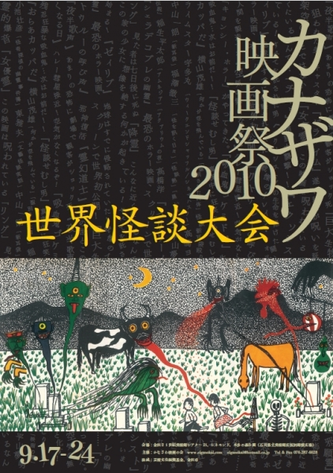

カナザワ映画祭オールタイム・ベスト募集カナザワ映画祭2010 世界怪談大会2010/09/17(金)〜24(金)説明文説明文説明文日本怪談邪願霊女優霊リング降霊吸血鬼ゴケミドロ海魔陸を行くおらあカッパだ空気の無くなる日怪談せむし男米国怪談パラダイムクトゥルーの呼び声ゼイリブスクワーム巨大生物の島欧州怪談ポゼッション デジタルニューマスター版亜細亜怪談霊幻道士夜半歌聲夜半歌聲続集チャウオープニング野外上映『シェラ・デ・コブレの幽霊』日本語字幕版シェラ・デ・コブレの幽霊